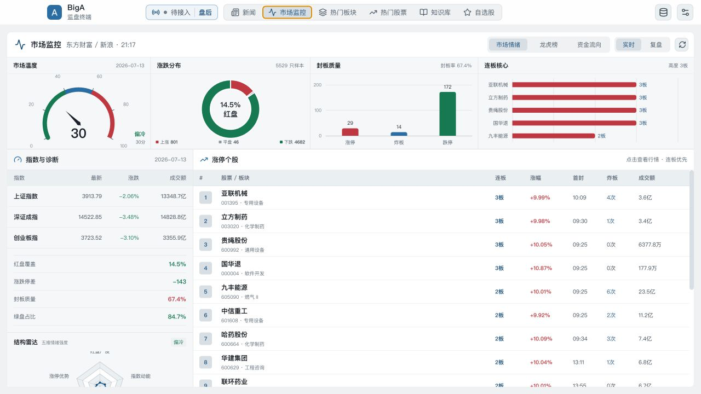
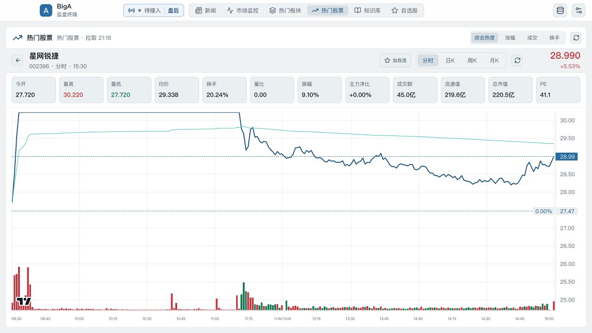
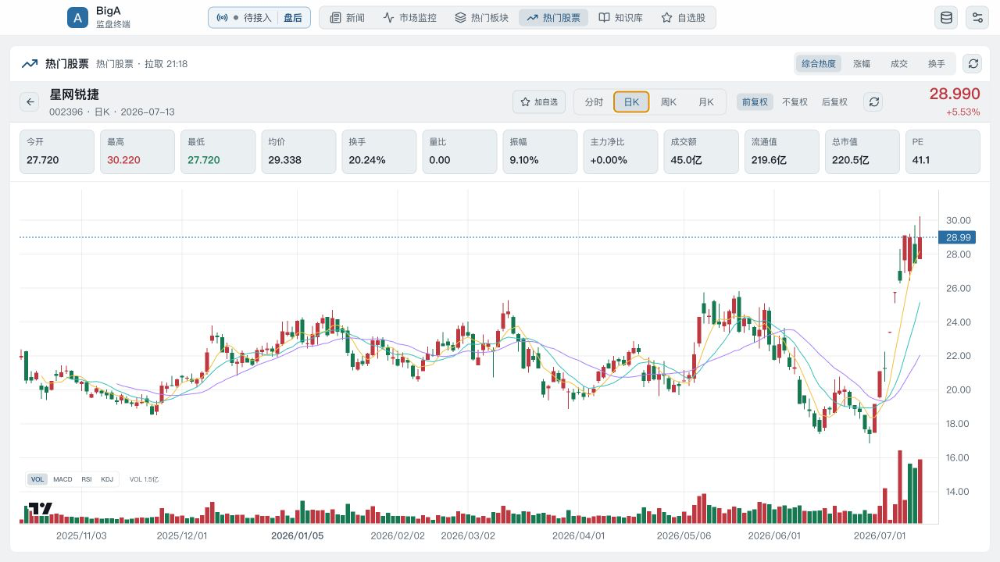
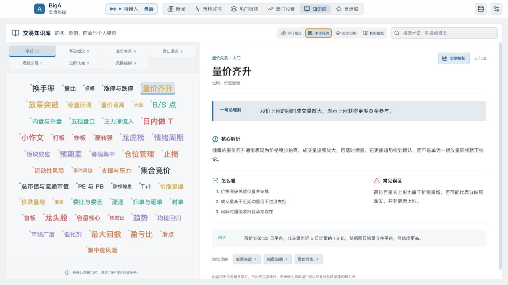
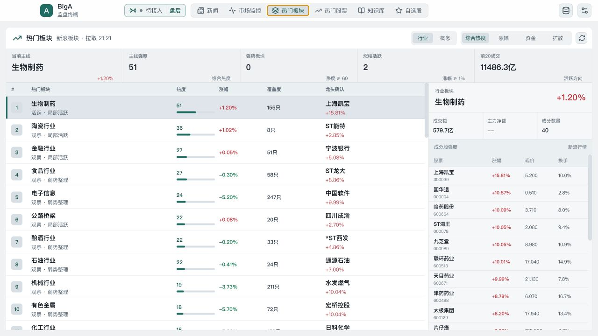

开盘先看全局，
再决定看什么。
市场温度、涨跌覆盖、封板质量和连板高度同屏呈现。先辨认当天环境，再下钻到板块和个股。
市场温度快速判断盘面偏暖或偏冷
涨跌分布确认行情是普涨还是局部活跃
封板质量结合涨停、炸板和封板率观察情绪
连板核心从高度和成交额识别短线焦点
分时看今天，
日 K 看结构。
从热门股票进入个股，走势、关键价格、成交量和常用指标都留在同一条路径里。



盘后不只看结果，
还要理解原因。
从词云进入术语解释，再把概念连回真实走势和失败案例。知识库用于形成自己的观察框架。
- 先懂口径
- 一句话解释、核心解析和常见误区放在一起。
- 再看案例
- 量价、突破、回踩等模式连接到真实 K 线。
- 最后回放
- 用训练和错题复查判断，不把结果当成建议。
工作区可以换皮肤，
涨红跌绿保持不变。
浅色适合日间和高亮屏幕，深色适合低光环境。主题只改变界面强调色，不改变行情语义。


只读监盘，
数据边界写清楚。
BigA 不提供下单和买卖建议。实时、延迟、陈旧、回退与休市状态会明确标注。
- 报价与 K 线
- 东方财富，新浪回退
- 情绪与龙虎榜
- 公开行情，本机聚合
- 资讯正文
- 东方财富，网易财经兜底
- 预警与训练
- 本地计算，本机持久化
下载 BigA
选择你的系统，
安装包直接下载。
无需进入 GitHub 页面。点击对应系统后，浏览器会直接下载安装包。
适合这台设备
macOS
Apple 芯片
M1 / M2 / M3 / M4
DMG，107.8 MiB
直接下载
macOS
Intel 芯片
适用于 Intel Mac
DMG，113.1 MiB
直接下载
适合这台设备
Windows
x64 安装程序
Windows 10 / 11
EXE，84.8 MiB
直接下载
适合这台设备
Linux
x64 AppImage
主流 x86_64 发行版
AppImage，118.8 MiB
直接下载
macOS 安装包暂未签名。首次打开时，可能需要在“隐私与安全性”中确认。